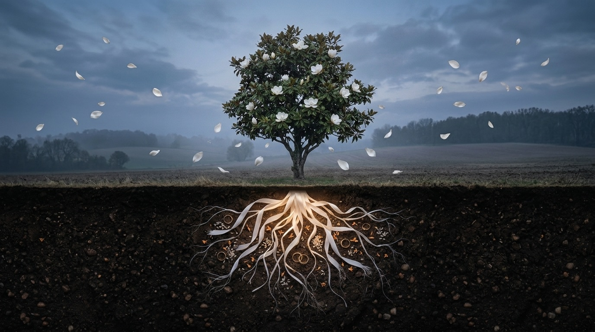

About the bank
The bank at Tal Amara.
What the bank does
For one of the richest plant heritages in the Mediterranean.

Collect
After sixteen years of joint expeditions with the Millennium Seed Bank at Kew, Lebanon’s seed collections came home. Botanists travel from Akkar’s high ridges to the southern valleys, and collect each plant at peak ripeness.
Document
Every variety gets a full record through LARI’s Plant Genetic Resources unit: altitude, soil, how it was farmed, and its genetic markers.
Keep
Seed collections rest in cold rooms at Tal Amara, ready for the day our land needs them.
Inside LARI
A public institute, working for every farmer.
The bank is part of the Lebanese Agricultural Research Institute, under the Ministry of Agriculture. LARI is Lebanon’s public agricultural science authority, and it has worked for decades on crop health, soils and sustainable farming.
Tal Amara houses biotechnology, seed production, plant protection and soil laboratories beside the cold rooms.
Visit LARI ↗The Bekaa Valley
Ten thousand years of farming, right outside the door.
The Bekaa is the old breadbasket of the eastern Mediterranean. Wild emmer wheat and barley grew on these slopes ten thousand years ago.
Tal Amara sits about 900 metres above sea level, between Mount Lebanon and the Anti-Lebanon. Its dry mountain air and clear seasons suit a sleeping seed.